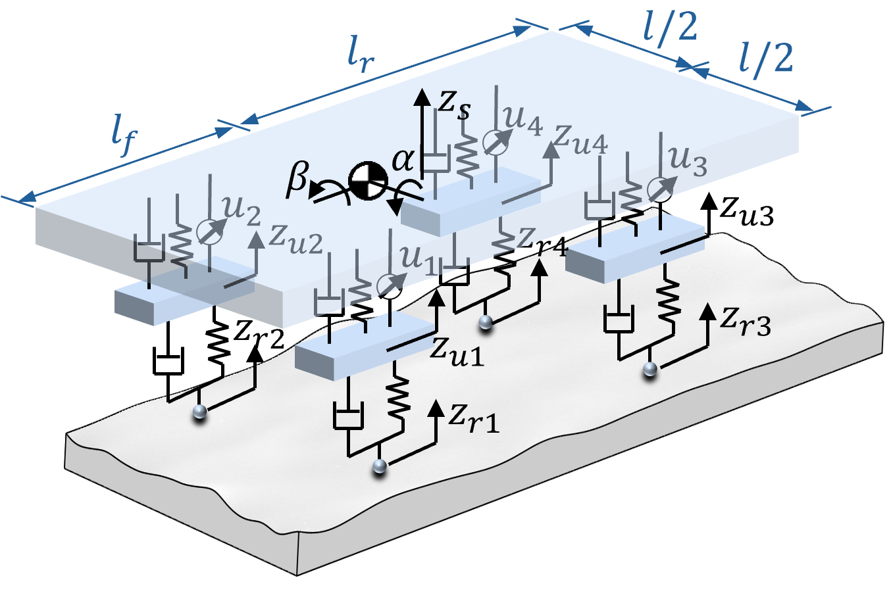
Texas State University · Mechanical Engineering
Our mission is to advance the design, integration, and optimization of engineering systems through physics-based and data-driven modeling, systems co-design, intelligent decision-making, and interdisciplinary innovation.
"Knowing is not enough; we must apply. Being willing is not enough; we must do." — Leonardo da Vinci (1452–1519)
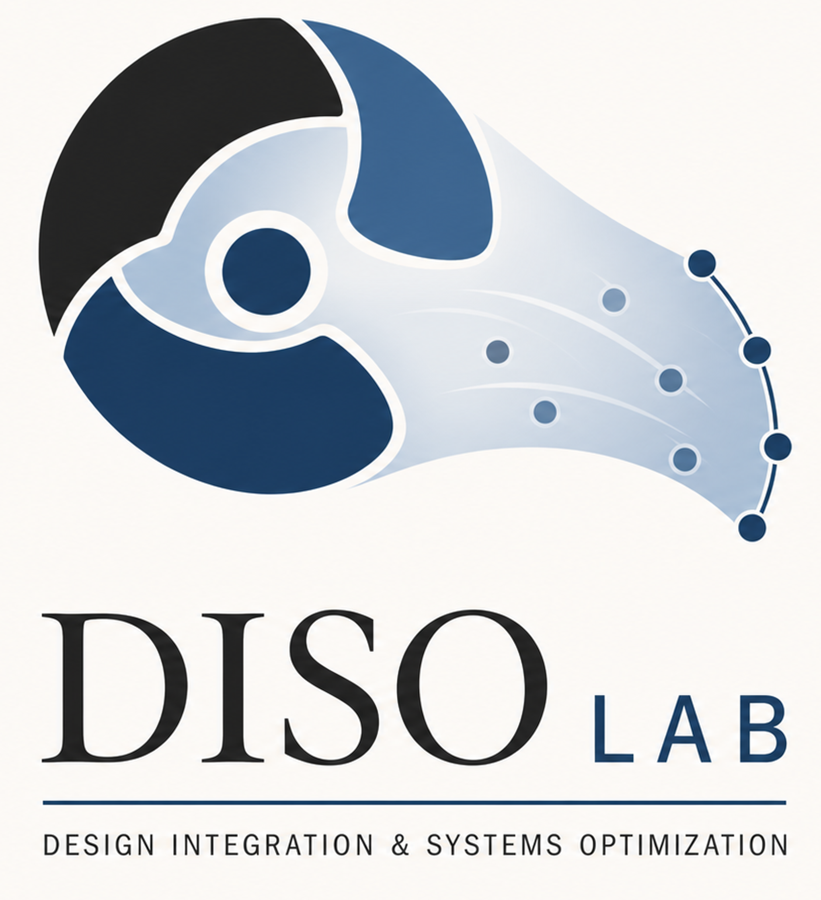
Latest updates
Presented our latest work on Bayesian co-design for AM at NAMRC54, State College, PA, USA.
Dr. Tsai presented the paper "UNiCO-AM: Uncertainty-aware Neural Co-design for Additive Manufacturing via an Attention-based Spatio-Temporal Neural Operator and Bayesian Optimization" at the North American Manufacturing Research Conference (NAMRC) 54. This work introduces a co-design framework for additive manufacturing that jointly optimizes material properties and process parameters under uncertainty.
Received the "Paper of Distinction" at ASME IDETC-CIE Design Automation Conference (DAC).
Top 10 papers selected from 101 accepted papers by the Design Automation Conference (DAC) committee. The recognized paper is "Multi-generational Control Co-Design for Digital Twin-enabled Systems with Deep Reinforcement Learning."
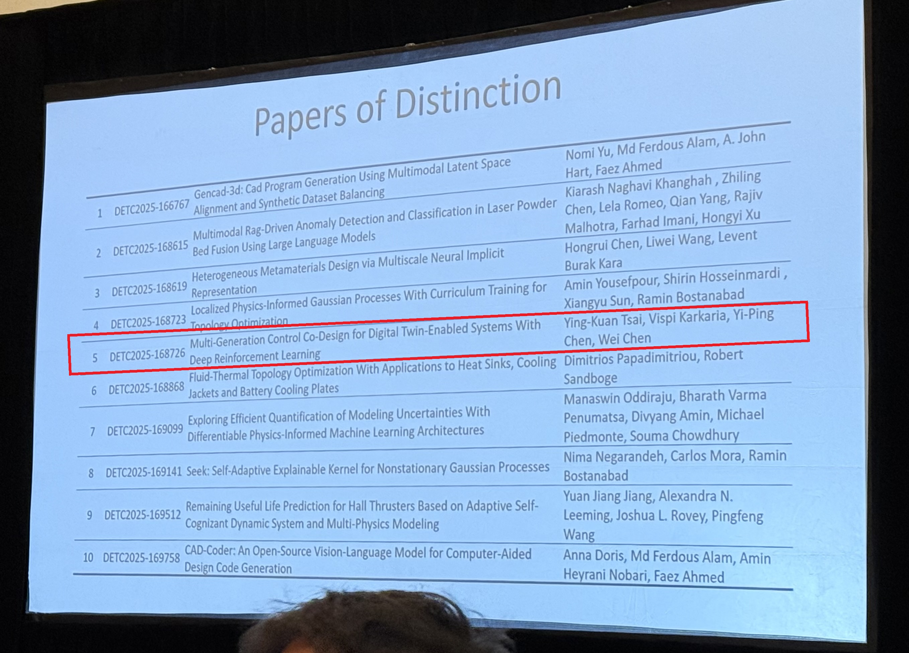
Received the "Outstanding Paper Award" in the Manufacturing Systems Track at North American Manufacturing Research Conference (NAMRC) 53.
Top 2 papers selected from 269 accepted papers by the conference committee. The recognized paper is "Real-Time Decision-Making for Digital Twin in Additive Manufacturing with Model Predictive Control using Time-Series Deep Neural Networks."
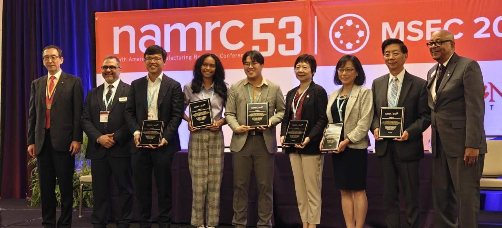
The people
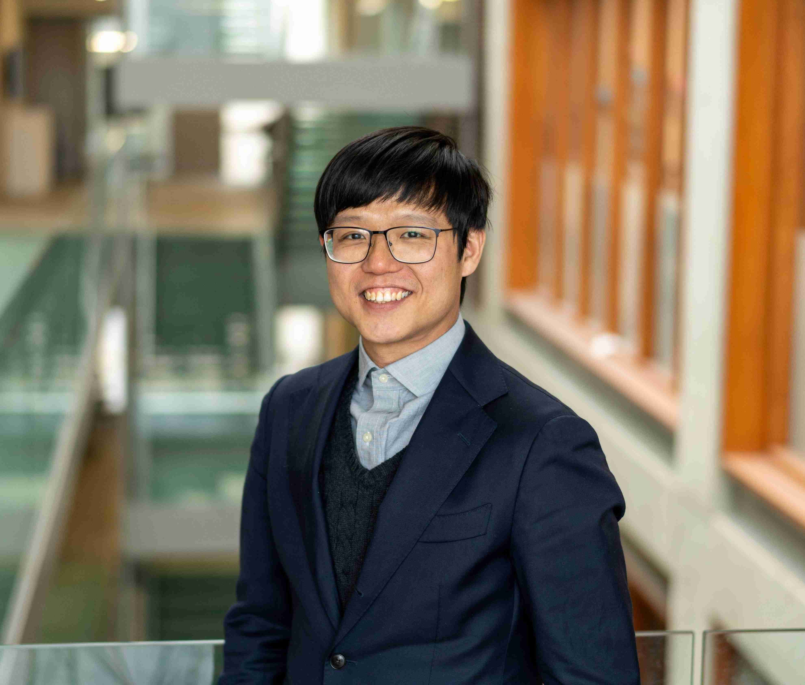
Principal Investigator
Dr. Tsai's research focuses on optimizing dynamic engineering systems, with an emphasis on integrating AI/ML, optimization, modern control, and digital twins. He has published over 20 peer-reviewed papers in the fields of engineering design, optimization, manufacturing, control, and digital twins.
Professional History
- Assistant Professor, Mechanical Engineering, Texas State University, San Marcos, TX, USA (2026–)
- Postdoctoral Scholar, Mechanical Engineering, Northwestern University, Evanston, IL, USA (2024–2026)
Education
- Ph.D. in Mechanical Engineering, Texas A&M University, College Station, TX, USA (2023)
- M.S. in Mechanical Engineering, National Taiwan University, Taipei, Taiwan (2018)
- B.S. in Mechanical Engineering, National Taiwan University of Science and Technology, Taipei, Taiwan (2016)
Teaching Interests: Design Optimization, Digital Twins, Dynamics and Control, and Numerical Methods
PhD · Postdoc · Visiting
We welcome applications from candidates with backgrounds in control, design optimization, machine learning, or engineering science.
What we study
We develop fundamental frameworks for optimizing dynamic engineering systems through the integration of artificial intelligence and machine learning (AI/ML), optimization, modern control, co-design, and digital twin technologies. We are building intelligent and adaptable systems that continuously learn from real-world data under uncertainty and evolve over their operational lifecycle with applications to autonomous systems across robotics, advanced manufacturing, automotive, smart materials, and aerospace domains.
We develop digital twin frameworks that fuse physics-based models with ML to enable real-time monitoring, control, and uncertainty-aware decision-making throughout a system's lifecycle.
Learn more →We advance CCD methodologies that integrate reinforcement learning (RL) and model predictive control (MPC) to jointly optimize physical design and control policies for autonomous systems operating in dynamic and uncertain environments.
Learn more →We develop active learning and advanced optimization methods that scale to system-level digital twins with inherent noise for data-efficient and interpretable decision-making across large-scale engineering systems.
Learn more →Our work
To see more publications, please go to my Google Scholar.
Google Scholar
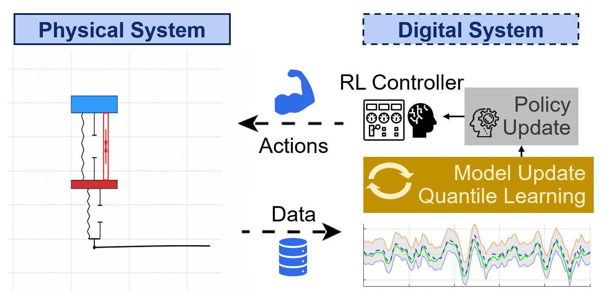
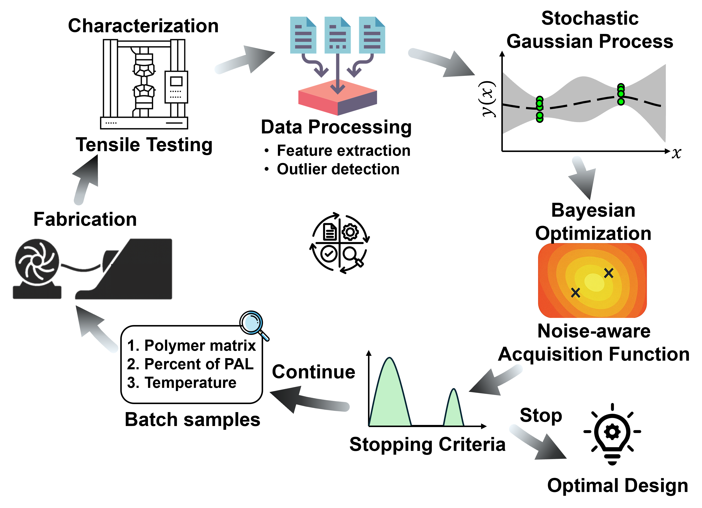
ASME IDETC-CIE Conference · Houston, Texas · August 2026 (accepted)
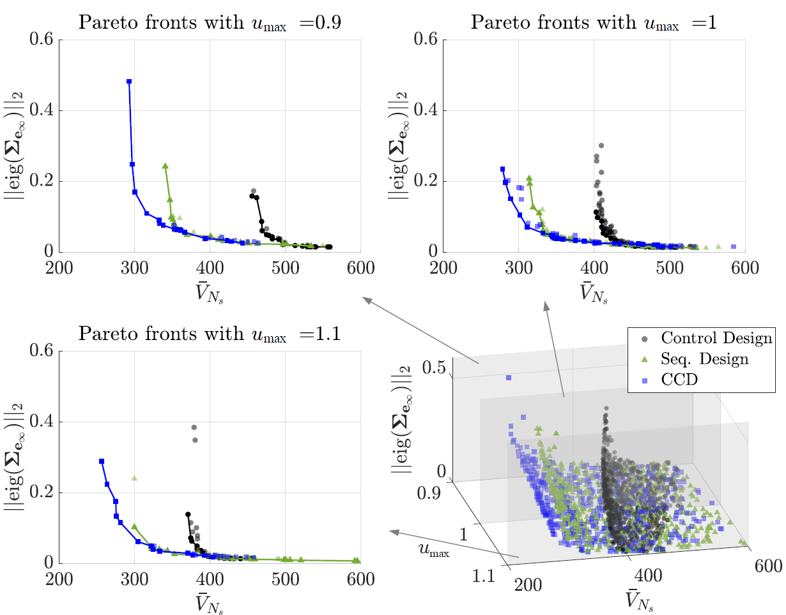
Journal of Mechanical Design · April 2026
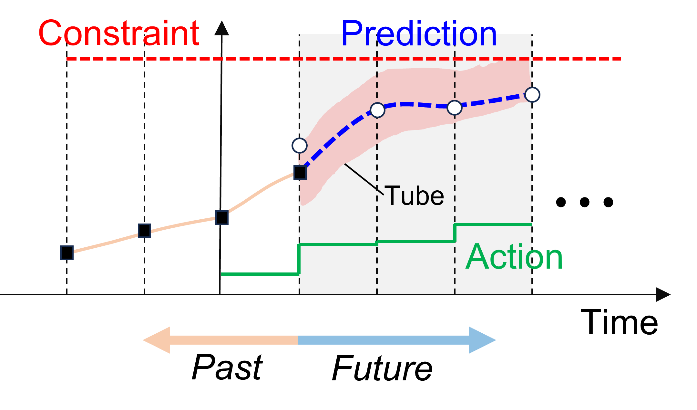
Journal of Mechanical Design · February 2026
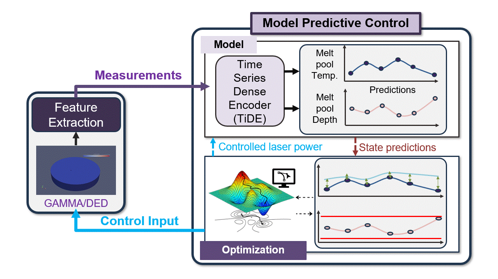
Journal of Manufacturing Systems · August 2026
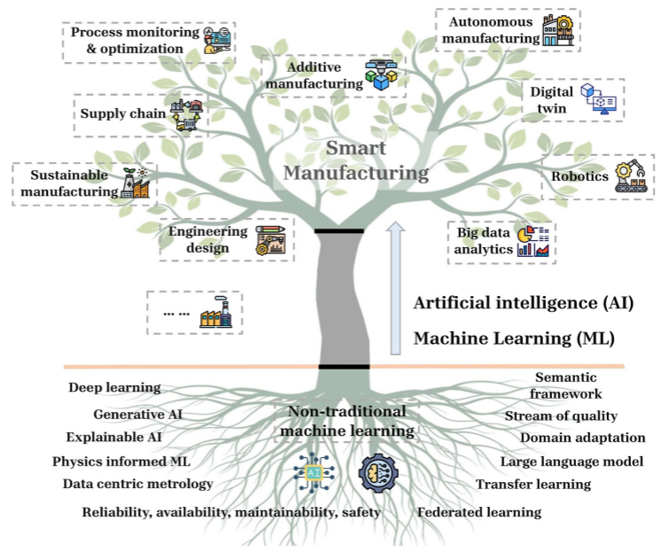
In Roadmap on AI and ML for Smart Manufacturing, ed. Jay Lee (Machine Learning: Engineering) · March 2026
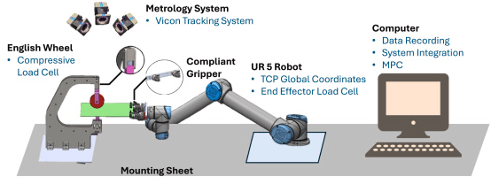
Journal of Manufacturing Systems · June 2026
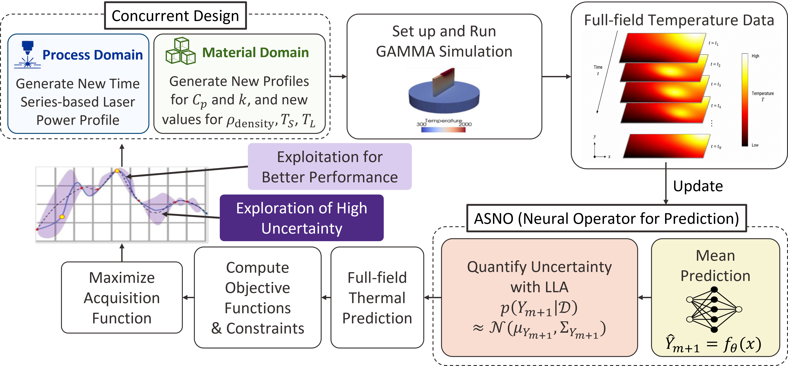
Manufacturing Letters (accepted) · NAMRC 54, University Park, PA · June 2026
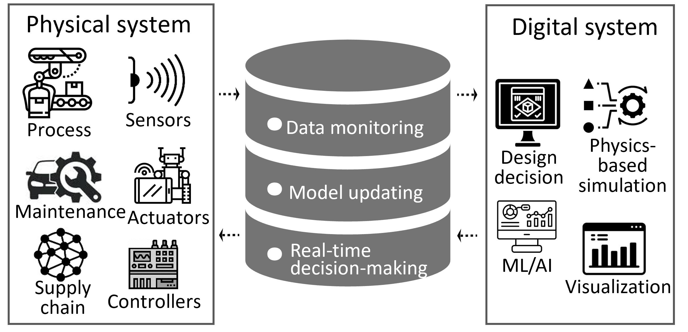
Engineering Optimization · January 2025
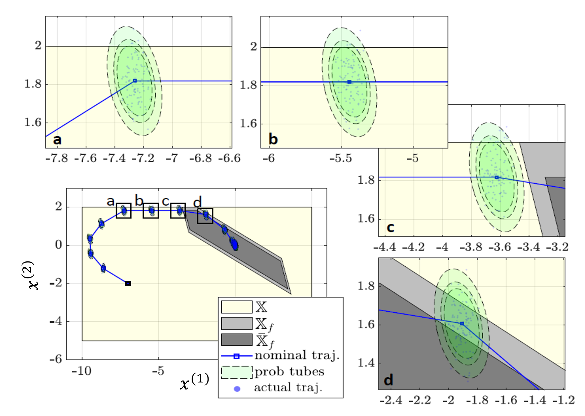
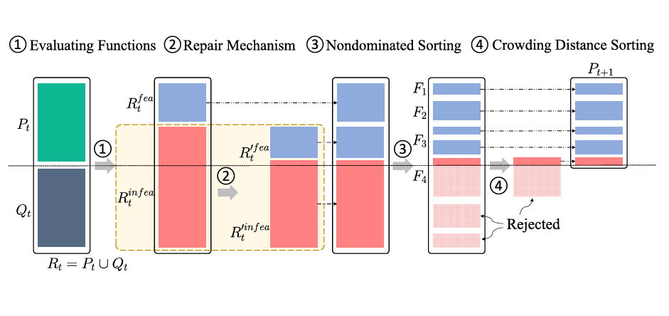
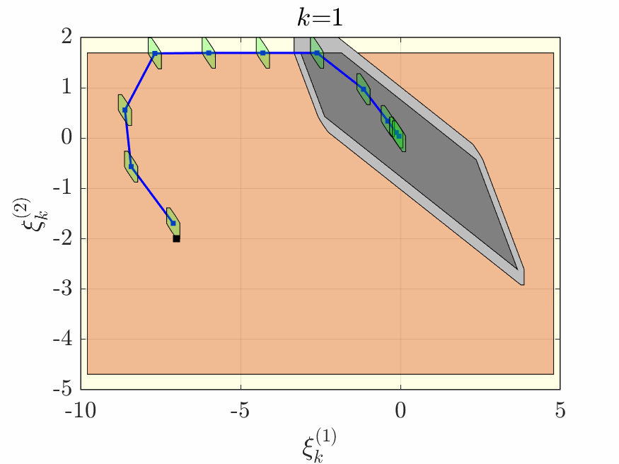
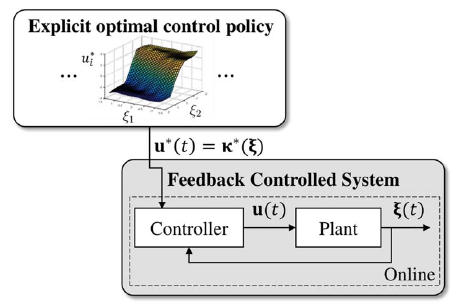
Journal of Mechanical Design · December 2022
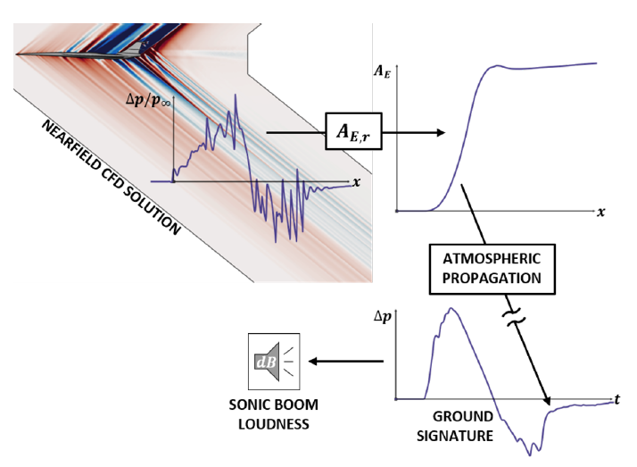
AIAA Scitech 2022 Forum · January 2022
Journal Articles
Conference Proceedings
Presentations (∗Indicates Presenter)
Courses taught
Mechanical Engineering · Texas State University
This course covers introductory concepts of linear control systems.
Undergraduate Course · Mechanical Engineering · Texas A&M University
This course provides a practical foundation for the use of numerical methods to solve engineering problems.
Undergraduate Course · Mechanical Engineering · Texas A&M University
This course provides a practical foundation for the use of numerical methods to solve engineering problems.
Join the lab
We are actively recruiting motivated researchers at multiple levels. If our work excites you, we'd love to hear from you.
The Design Integration and Systems Optimization (DISO) Lab is seeking highly motivated Ph.D. students interested in developing fundamental methodologies for the design, control, and optimization of dynamic engineering systems. Our research integrates artificial intelligence and machine learning, optimization, control co-design, modern control, and digital twins, with applications in robotics, advanced manufacturing, automotive systems, smart materials, and aerospace systems.
Students with backgrounds in mechanical engineering, aerospace engineering, robotics, control systems, computer science, applied mathematics, or related fields are encouraged to apply. We value curiosity, creativity, initiative, and a passion for interdisciplinary research.
View Opening →Undergraduate and M.S. students at Texas State University who are interested in gaining research experience in AI/ML, optimization, control, digital twins, robotics, manufacturing, autonomous systems, or related areas are encouraged to contact Dr. Tsai.
Please email your resume and a brief description of your interests and research goals. Opportunities may include independent research projects, undergraduate research experiences, and master's thesis or project supervision.
Email Dr. Tsai →Get in touch
We're always open to collaboration, media inquiries, and prospective student applications.